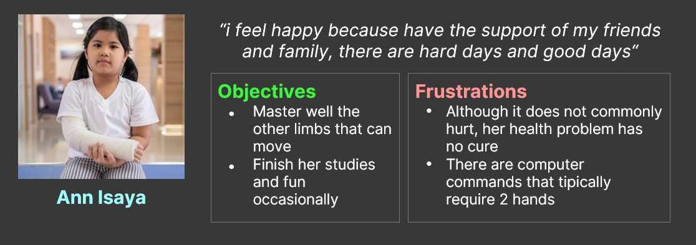

The Nutri More app and website
This is a tool to the nutritional asesories multiplatform that works online, available in one app to mobile devices and as a website also.
The focus users are persons with reduced motor functions and all they that want to increase their health though the alimentation.
Boost the consiency about how the nutrition can help your life in short and long term
My role
-
UX research
-
Wireframes making
-
Low and High fidelity prototyping
-
Product gestion
Project Goal
I pretend to enhance the online life of this persons group and increment their health
Emphatysing

Principal constraints
- People with reduced motor functions aren't cpnsidered as special, instead as "inferiors"
- I am knowing so many people, close and far that have alimentation problem
Desing strategy
Site map

Crazy heights

This was a good practice to no dismiss original and creative functions , where i have a robust idea draw a "pseudo-wireframe"
Mobile screen paper wireframes

App's wireframes
Prototyping
Low fidelity prototypeTests in users
\Planning the study
I wanted to get honest feedback that can give me actions to do and this happened in three steps
1 - Background and goals
I made a document that explain the importancy of the user, be sure that they will have solutions and no problems.
Always is good remember where we from and where we go.
2 - KPIs
The key performance indicator tell me what data i need? which questions i will ask?
- The time that the users will put in doing the principal task
- The number of persons that no finish the process
- Quizes where the users insert how happy of confused they feel after finishing the task
3 - Script
A note or guidance personal to be more prepared to conduct the studies, this can include the incentive to the participant, follow-up questions and even pro-tips
Getting feedback

Results
Research insights
1. Sign in
The most off users consider that the quetions makes you feel bad
2. Nutritional plan
They don't know if already have selected their ideal nutritional plan or still have more actions to do
3. Saucer
Someones would want remove sauces or put off it
Final prototype

Next steps
- Show the progress to the engineers / developers teams
- Complete the screens, add the missing of the app to the website and visceverse
What i learned
I also learned to use better and find icons on the web
Perfectioned my technique and workflow in the Adobe XD software.